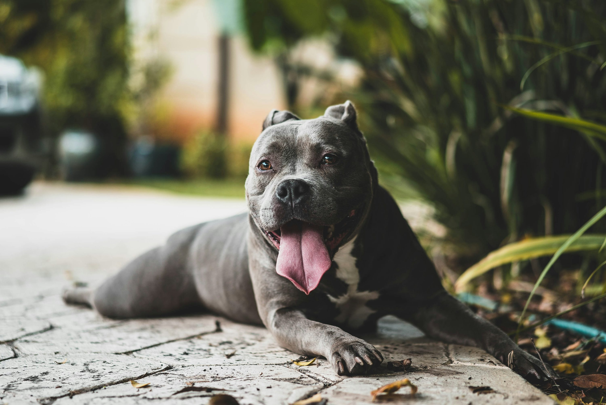

⭐ Lulu da Pomerânia
Raça conhecida por sua pelagem fofa e personalidade extrovertida. Apesar do tamanho pequeno, são cães corajosos e muito apegados aos donos.
- **Curiosidade:** São descendentes de cães de trenó da Islândia e Lapônia.
- **Cuidados:** Requer escovação diária devido à densidade da pelagem.

💪 Pitbull
O American Pit Bull Terrier é um cão forte, atlético e, quando bem socializado e treinado, extremamente leal e carinhoso com a família.
- **Curiosidade:** O termo "Pitbull" é um nome genérico para várias raças de cães com características semelhantes.
- **Mito:** São frequentemente vítimas de má reputação, mas são gentis por natureza.